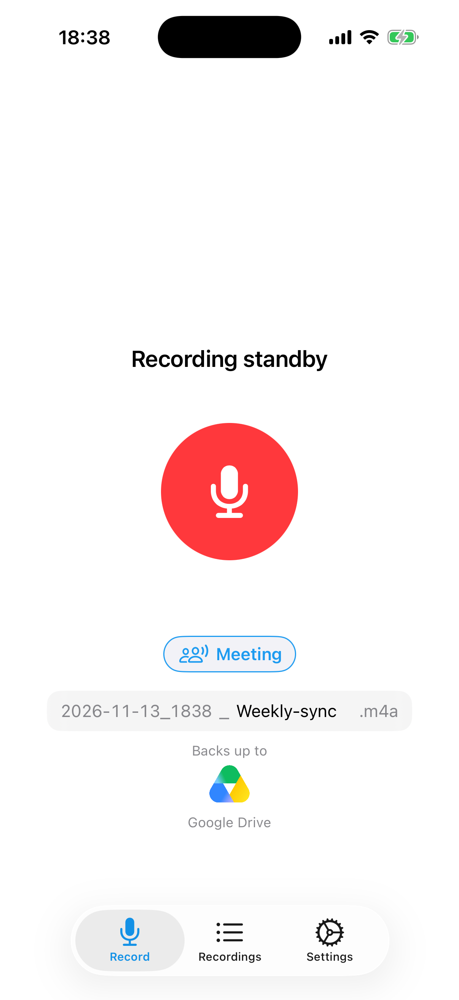

停止錄音，檔案已經在Drive 裡了。
錄下會議的 iPhone App。錄音會自動送到你自己的雲端。
免費下載。支援 iOS 17 以上的 iPhone。
| 名稱 | 上次修改時間 |
|---|---|
| 2026-11-12_1403_週會.m4a | 14:41 |
| 2026-11-11_1405_設計審查.m4a | 11月11日 |
| 2026-11-10_0900_管理學_第5週.m4a | 11月10日 |
| 2026-11-07_1630_客戶訪談.m4a | 11月7日 |
| 2026-11-06_1100_1on1.m4a | 11月6日 |
| 2026-11-05_1500_專題討論.m4a | 11月5日 |
6 個步驟，變成 2 個。
iPhone 內建的語音備忘錄
- 錄音
- 停止
- 修改檔名
- 點一下分享
- 選擇雲端硬碟與資料夾
- 等待上傳
 RecExport
RecExport
- 錄音
- 停止
上傳、資料夾整理、命名都會自動完成。關閉 App 後也會繼續。
會議前後的麻煩事，交給它。
| 以前的麻煩 | RecExport 會做的事 |
|---|---|
| 忘記錄音 | 行事曆的活動開始前，會收到提醒。 |
| 會議室的雜音 | 會議模式會降低周圍的雜音。 |
| 事後才命名 | 以日期、時間與活動名稱儲存，之後好找。 |
| iPhone 空間不足 | 已存到雲端的錄音，可以自動從裝置刪除。 |
| iPhone 故障或遺失 | 錄音早已在你的雲端裡。 |
大家這樣使用。
-
錄音檔Google 雲端硬碟
每場會議，都成為會議記錄的素材
行事曆提醒一到就開始錄，以行程名稱存進雲端硬碟。
-
錄音檔雲端硬碟家裡的 NAS
雲端與 NAS，同時保存
一段錄音，自動存到兩個地方。
-
錄音檔雲端AI
接著交給 AI 轉成文字和摘要
也有人把雲端裡的錄音，交給自己常用的 AI。
錄音直接存進你的雲端。
錄音不會存放在 RecExport 的伺服器，也不需要註冊帳號。
- 筆錄音，已經在雲端
- 5,000+
- 小時的會議與課程
- 1,500+
- 個國家的人在使用
- 60+
| 儲存位置 | 登入時使用 | 儲存筆數 |
|---|---|---|
| Google 雲端硬碟 | Google 帳號 | 3,600+ |
| Dropbox | Dropbox 帳號 | 600+ |
| OneDrive | Microsoft 帳號 | 400+ |
| NAS 或自己的伺服器 | WebDAV 或 S3 | 200+ |
| 此為 2026 年 11 月的概略數字。各儲存位置的筆數，是依匿名使用統計中的比例推算。 | ||
- RecExport 帳號
- 不需要
- 需要的東西
- iOS 17 以上的 iPhone
- 價格
- 免費下載
常見問題
錄音會存到 RecExport 的伺服器嗎？
不會。錄音會從 iPhone 直接送到你選擇的儲存位置。
錄音時鎖定 iPhone，錄音會停止嗎？
不會。鎖定後放進口袋也沒問題。
沒有訊號的地方也能錄音嗎？
可以。錄音會存在 iPhone 上，連上網路後自動上傳。
可以選擇儲存的資料夾嗎？
可以。每個儲存位置都能在設定中選擇。
下一場會議，就錄錄看。
